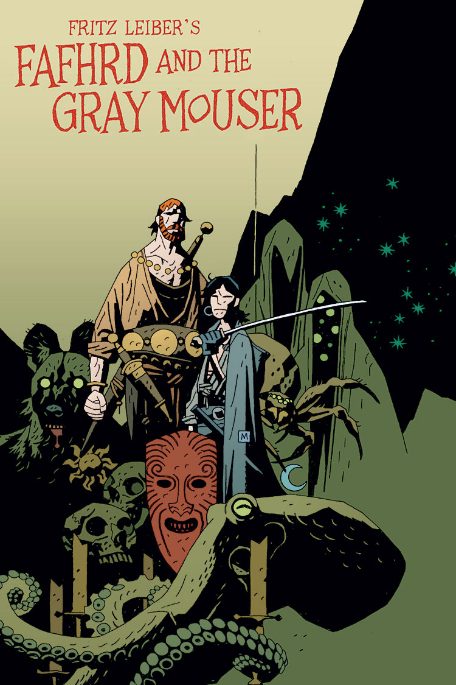
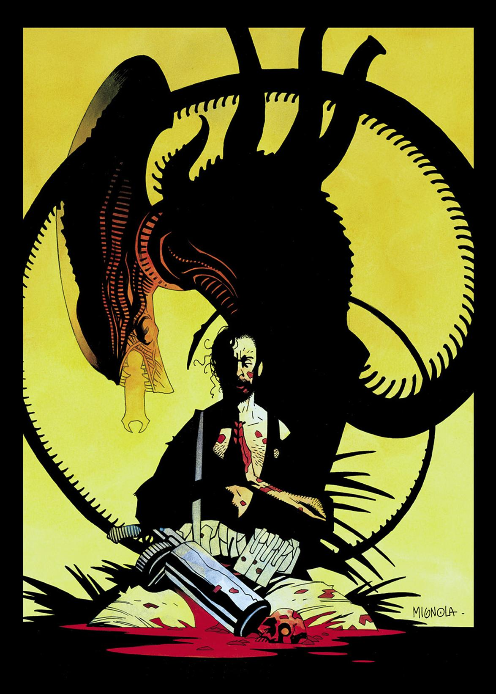
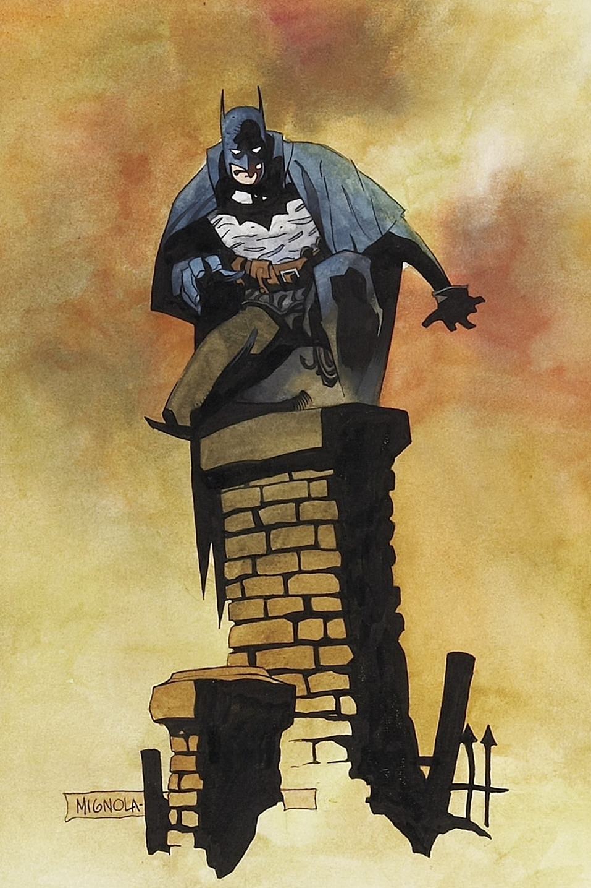

Mike Mignola
Hellboy
First appearing in 1993 Works for the B.P.R.D. Blah blah blah
B.P.R.D.
The Bureau for Paranormal Research and Defense was founded in 1945 by Professor Trevor Bruttenholm to counter occult threats from Nazi Germany.
Members include agents in the "Enhanced Talents Taskforce" such as Hellboy, Abe Sapien, the pyrokinetic Liz Sherman, incorporeal psyhic Johann Kraus, Captain Benjamin Daimio, and Roger the homunculus.
Dark Horse Comics released the B.P.R.D. comic series in 2002.
Lobster Johnson
First appearing in Hellboy: Box Full of Evil, The Lobster was a New York City vigilante operating during the Thirties. The Lobster battled Nazis, gangsters, and other villains, often in violent fashion, and was known for leaving his trademark lobster claw symbol burned into their foreheads.
In the Hellboy universe, a fictional version of the character appeared in pulp stories, comics, and movies. The real Lobster perished while trying to prevent a Nazi rocket launch, but his ghost has appeared and aided Hellboy and other B.P.R.D members on several occasions.
After appearances in the Hellboy and B.P.R.D. comic series, the Lobster Johnson series was published starting with The Iron Prometheus. The series was written by Mignola and John Arcudi with art by several artists.

Sir Edward Grey, Witchfinder
Edward Grey was a Victorian era occult investigator. After successfully dealing with a haunting in the Tower of London, Grey accepted an offer from Queen Victoria to be an agent of the crown. Later he would become a Knight of the Realm after foiling an assassination attempt on the Queen by three witches.
The character had appearances in the Hellboy universe as early as Hellboy: Wake The Devil, and in 2009 Dark Horse Comics published the first of the ongoing series: Witchfinder: City of the Dead.
Lord Baltimore
Lord Henry Baltimore awakens an ancient evil in 1914 while serving in the Great War. The vampire lord Haigus wages war on humanity, unleashes a plague, and destroys Lord Baltimore's family and Trevelyan Island home.
Lord Baltimore sets out to avenge his family and destroy Haigus, enlisting the aid of several friends including Doctor Lemuel Rose, Captain Demetrius Aischros and Thomas Childress.
The character first appeared in the novel Baltimore, or The Steadfast Tin Soldier & the Vampire (2007) written by Mignola and Christopher Golden. In 2010, Dark Horse Comics published the comic series Baltimore, also written by Mignola and Golden, with art by Ben Stenbeck and Dave Stewart. Peter Bergting and Michelle Madsen also provided art in later issues.
Screw-on Head
Blah blah blah
Other Works
-

Fafhrd and the Gray Mouser
Oct. 1990
In 1990, Marvel's Epic Comics released a comic adaptation of Fritz Leiber's Fafhrd and the Gray Mouser. The four-part series was written by Howard Chaykin with pencils by Mike Mignola and inks by Al Williamson.
-

Alien: Salvation
Nov. 1993
Dark Horse Comics published the one-shot comic Alien: Salvation. Written by Dave Gibbons, with pencils by Mike Mignola and inks by Kevin Nowlan.
-

Batman: The Doom That Came to Gotham
Nov. 2000
Published by DC Comics' Elseworlds and written by Mignola and Richard Pace, this story reimagines Batman as a pulp vigilante in the Twenties. It features a Lovecraftian threat and atmosphere, along with several familiar Batman allies and villains. Mignola created the covers. Troy Nixey penciled the comic pages and Dennis Janke inked.


Mike Mignola has created several books with Christopher Golden.
- Hellboy: Bones of Giants (2001)
- Baltimore, or The Steadfast Tin Soldier & the Vampire (2007)
- Joe Golem and the Drowning City (2012)
- Father Gaetano's Puppet Catechism: A Novella (2012)